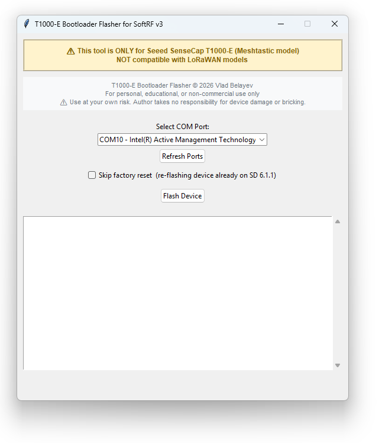
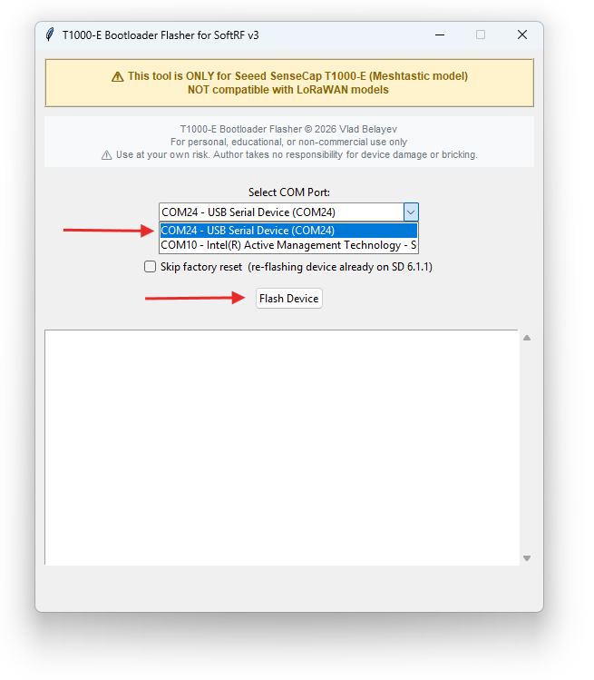
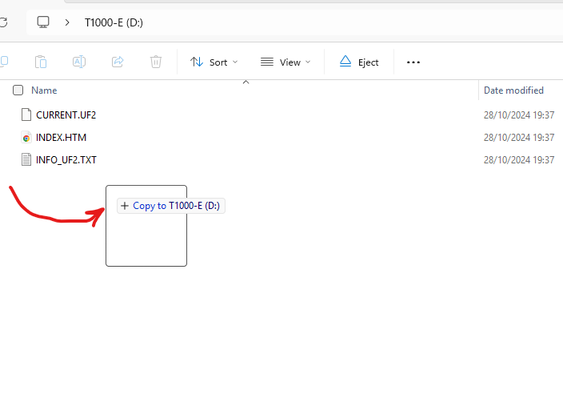

Getting Started with T1000E Card
So you have got yourself a new shiny T1000E SenseCap
...and you are wondering what to do with it and how to get it to work with SoftRF? You have come to the right place! Follow these instructions carefully.
Step 1: Download Required Files
First, download both files you'll need for the complete setup:
1.1 Download Bootloader Flasher Utility
📥 Download Bootloader Flasher Utility1.2 Download SoftRF Firmware
Download this now so it's ready when you need it in Step 3:
📥 Download SoftRF Firmware for T1000EStep 2: Flash the Bootloader
2.1 Connect Your Device
Use a USB cable to connect your T1000E SenseCap to your computer.
2.2 Run the Bootloader Flasher
Double-click the downloaded bootloader_flasher.exe file.

2.3 Select COM Port and Flash
- Select your device's COM port from the dropdown menu
- Click the "Flash Device" button
- Wait for the flashing process to complete

Step 3: Install the SoftRF Firmware
After the bootloader flash completes successfully, a File Explorer window will automatically pop up showing the T1000-E drive.
3.1 Copy Firmware to Device
Simply drag and drop (or copy) the SoftRF firmware .uf2 file you downloaded in Step 1.2 into the T1000-E drive window.

- Power off the device
- Press & hold the button
- Quickly connect the USB cable TWICE (double-tap connection)
- The
T1000-Edrive should appear
3.2 Complete Installation
Once you copy the firmware file, the device will automatically:
- Install the firmware
- Reboot
- Be ready to use with SoftRF!
Additional Resources
- T1000E Card User Guide — LED codes, button controls, settings file
- SoftRF User Guide — Full documentation for SoftRF MB edition
- WebApp Configurator — Web-based configuration tool
- OGN Device Registration — Register your aircraft ID
- Puretrack Registration — Register on Puretrack
Support This Project
If you found this tool helpful and would like to support continued development:
☕ Buy Me a CoffeeYour support helps maintain and improve these tools for the community. Thank you!